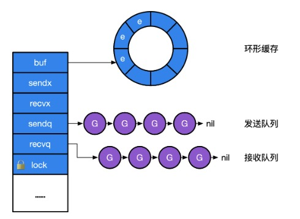

类型
1、channel
本质上是一个锁加上一个环状缓存、一个发送方队列和一个接收方队列。
// src/runtime/chan.go
type hchan struct {
qcount uint // total data in the queue 队列中所有数据数
dataqsiz uint // size of the circular queue 环形队列的大小
buf unsafe.Pointer // points to an array of dataqsiz elements 指向环形队列数组的指针
elemsize uint16 // 元素大小
closed uint32 // 是否关闭
elemtype *_type // element type 元素类型
sendx uint // send index 发送索引
recvx uint // receive index 接收索引
recvq waitq // list of recv waiters 接收等待列表
sendq waitq // list of send waiters 发送等待列表
// lock protects all fields in hchan, as well as several
// fields in sudogs blocked on this channel.
//
// Do not change another G's status while holding this lock
// (in particular, do not ready a G), as this can deadlock
// with stack shrinking.
lock mutex
}
type waitq struct {
first *sudog
last *sudog
}

channel的创建
将一个make语句转换为makechan调用。makechan实现的本质是根据需要创建的元素大小，对mallocgc进行封装。channel总是在堆上进行分配，它们会被垃圾回收器进行回收，所以说channel不一定总是需要调用close进行显示关闭。
// src/runtime/chan.go
func makechan(t *chantype, size int) *hchan {
elem := t.elem
// compiler checks this but be safe.
// 通道元素的大小不能超过64KB
// 虽然编译器会进行类型检查，但这里仍加一层检查，确保安全性
if elem.size >= 1<<16 {
throw("makechan: invalid channel element type")
}
// 检查通道的对齐情况
// 检查通道的大小是否可以被最大对齐值整除或者检查通道元素的对齐值是否超过了最大对齐值
if hchanSize%maxAlign != 0 || elem.align > maxAlign {
throw("makechan: bad alignment")
}
// 计算元素大小与个数的乘积，返回结果和溢出标志
mem, overflow := math.MulUintptr(elem.size, uintptr(size))
// 溢出标志：乘积超出了uintptr类型的范围
// 如果乘积mem大于了maxAlloc-hchanSize，说明需要分配的内存超出了最大允许分配的内存量。
// size小于0，说明是一个无效通道
if overflow || mem > maxAlloc-hchanSize || size < 0 {
panic(plainError("makechan: size out of range"))
}
// Hchan does not contain pointers interesting for GC when elements stored in buf do not contain pointers.
// buf points into the same allocation, elemtype is persistent.
// SudoG's are referenced from their owning thread so they can't be collected.
// TODO(dvyukov,rlh): Rethink when collector can move allocated objects.
var c *hchan
switch {
case mem == 0:
// Queue or element size is zero.
// 队列或元素大小为0，仅需分配一个hchan结构体的内存
c = (*hchan)(mallocgc(hchanSize, nil, true))
// Race detector uses this location for synchronization.
// 竟态检测
c.buf = c.raceaddr()
case elem.ptrdata == 0:
// Elements do not contain pointers.
// Allocate hchan and buf in one call.
// 元素不包含指针
// 一次性分配hchan和缓冲区buf的内存
c = (*hchan)(mallocgc(hchanSize+mem, nil, true))
// 将buf指针设置为c指针后面的内存位置
c.buf = add(unsafe.Pointer(c), hchanSize)
default:
// Elements contain pointers.
// 包含指针，分别分配hchan和缓冲区buf的内存
c = new(hchan)
c.buf = mallocgc(mem, elem, true)
}
// 初始化通道结构体
c.elemsize = uint16(elem.size)
c.elemtype = elem
c.dataqsiz = uint(size)
// 初始化通道的锁
lockInit(&c.lock, lockRankHchan)
if debugChan {
print("makechan: chan=", c, "; elemsize=", elem.size, "; dataqsiz=", size, "\n")
}
return c
}
在GO语言中，通道元素的大小限制在小于64KB，主要是出于性能和实现的考虑，确保通道的高效实现和避免潜在的问题。
性能考虑：
- 内存分配：当通道的元素大小较大时，每次传输一个元素所需的内存分配和拷贝成本也会增加，导致性能显著下降。
- 缓存局部性：较大的元素会影响CPU缓存的使用效率。较小的元素可以更好的利用缓存，提高程序的运行效率。
内存管理：
- 内存碎片：较大的内存块可能会导致内存碎片问题，影响内存的分配和管理。
- GC压力：增加垃圾回收器的负担。
实现简化：
- 通道实现：通道的底层实现需要处理元素的存储和传输。限制元素的大小可以简化通道的实现，使代码易于维护。
- 缓冲区管理：通道的缓冲区管理会变的更加复杂，如果元素的大小不受限制，可能需要处理不同大小的内存块。
channel并不严格支持int64大小的缓冲，当make时的大小为int64类型时，运行时会将其强转为int，提供了对int转型是否成功的检查：
func makechan64(t *chantype, size int64) *hchan {
// 确保了size在转换为int类型时不会发生溢出，由于makechan可能依赖于int类型来处理通道的容量，
// 这个检查是必要的，以避免潜在的内存分配错误或其他逻辑错误，
// 如果size超出int类型的表示范围，则会引发panic，避免不合法的通道创建
if int64(int(size)) != size {
panic(plainError("makechan: size out of range"))
}
return makechan(t, int(size))
}
向channel发送数据：
- 如果一个channel为零值（比如没有初始化），这个时候发送操作会阻塞当前的协程，发生死锁。
- 当channel上有接收方等待，可以直接将数据发送走，并返回。
- 没有接收方，但缓存中还有空间来存放没有读取的数据，则存储在缓冲区。
- 没有接收方，缓存也满了，则阻塞当前的协程
// 向channel发送数据的实现
// entry point for c <- x from compiled code.
//
//go:nosplit
func chansend1(c *hchan, elem unsafe.Pointer) {
chansend(c, elem, true, getcallerpc())
}
/*
* generic single channel send/recv
* If block is not nil,
* then the protocol will not
* sleep but return if it could
* not complete.
*
* sleep can wake up with g.param == nil
* when a channel involved in the sleep has
* been closed. it is easiest to loop and re-run
* the operation; we'll see that it's now closed.
*/
// c 指向目标channel的指针
// ep 指向待发送数据的指针
// block 是否为阻塞操作
// callerpc 调用方的程序计数器
func chansend(c *hchan, ep unsafe.Pointer, block bool, callerpc uintptr) bool {
// 向nil的channel发送数据，会调用gopark
if c == nil {
if !block {
return false
}
// gopark会将当前的协程休眠，发生死锁崩溃
gopark(nil, nil, waitReasonChanSendNilChan, traceEvGoStop, 2)
throw("unreachable")
}
if debugChan {
print("chansend: chan=", c, "\n")
}
// 如果启用了竟态检测，会记录相应的读操作
if raceenabled {
racereadpc(c.raceaddr(), callerpc, abi.FuncPCABIInternal(chansend))
}
// Fast path: check for failed non-blocking operation without acquiring the lock.
//
// After observing that the channel is not closed, we observe that the channel is
// not ready for sending. Each of these observations is a single word-sized read
// (first c.closed and second full()).
// Because a closed channel cannot transition from 'ready for sending' to
// 'not ready for sending', even if the channel is closed between the two observations,
// they imply a moment between the two when the channel was both not yet closed
// and not ready for sending. We behave as if we observed the channel at that moment,
// and report that the send cannot proceed.
//
// It is okay if the reads are reordered here: if we observe that the channel is not
// ready for sending and then observe that it is not closed, that implies that the
// channel wasn't closed during the first observation. However, nothing here
// guarantees forward progress. We rely on the side effects of lock release in
// chanrecv() and closechan() to update this thread's view of c.closed and full().
// 非阻塞操作并且没有关闭并且满了
if !block && c.closed == 0 && full(c) {
return false
}
// 启用性能分析，记录当前时间戳
var t0 int64
if blockprofilerate > 0 {
t0 = cputicks()
}
// 加锁，确保并发安全
lock(&c.lock)
// 双重检验
// channel关闭了，解锁并且panic
if c.closed != 0 {
unlock(&c.lock)
panic(plainError("send on closed channel"))
}
// 检查是否有等待的接收者
if sg := c.recvq.dequeue(); sg != nil {
// Found a waiting receiver. We pass the value we want to send
// directly to the receiver, bypassing the channel buffer (if any).
// 有，直接将数据发送给接收者，绕过缓冲区，并解锁
send(c, sg, ep, func() { unlock(&c.lock) }, 3)
return true
}
if c.qcount < c.dataqsiz {
// 有缓冲区空间
// Space is available in the channel buffer. Enqueue the element to send.
// 获取要拷贝到的缓冲区地址空间
qp := chanbuf(c, c.sendx)
if raceenabled {
racenotify(c, c.sendx, nil)
}
// 将数据复制到缓冲区
typedmemmove(c.elemtype, qp, ep)
// 更新缓冲区计数和索引，解锁并返回
c.sendx++
if c.sendx == c.dataqsiz {
c.sendx = 0
}
c.qcount++
unlock(&c.lock)
return true
}
// 非阻塞操作，没有空间，解锁返回
if !block {
unlock(&c.lock)
return false
}
// 没有等待的并且也没有缓冲空间了则会阻塞协程
// Block on the channel. Some receiver will complete our operation for us.
gp := getg()
// 创建sudog
mysg := acquireSudog()
mysg.releasetime = 0
if t0 != 0 {
mysg.releasetime = -1
}
// No stack splits between assigning elem and enqueuing mysg
// on gp.waiting where copystack can find it.
mysg.elem = ep
mysg.waitlink = nil
mysg.g = gp
mysg.isSelect = false
mysg.c = c
gp.waiting = mysg
gp.param = nil
// 加入发送等待队列
c.sendq.enqueue(mysg)
// Signal to anyone trying to shrink our stack that we're about
// to park on a channel. The window between when this G's status
// changes and when we set gp.activeStackChans is not safe for
// stack shrinking.
// 将当前协程状态设置为等待，并将其挂起，等待被唤醒
gp.parkingOnChan.Store(true)
gopark(chanparkcommit, unsafe.Pointer(&c.lock), waitReasonChanSend, traceEvGoBlockSend, 2)
// Ensure the value being sent is kept alive until the
// receiver copies it out. The sudog has a pointer to the
// stack object, but sudogs aren't considered as roots of the
// stack tracer.
// 确保待发送的数据在接收者复制之前不会被回收
KeepAlive(ep)
// someone woke us up.
// 被唤醒后，检查等待队列是否被破坏
if mysg != gp.waiting {
throw("G waiting list is corrupted")
}
// 更新相应状态
gp.waiting = nil
gp.activeStackChans = false
closed := !mysg.success
gp.param = nil
if mysg.releasetime > 0 {
blockevent(mysg.releasetime-t0, 2)
}
mysg.c = nil
// 释放
releaseSudog(mysg)
// channel 已经关闭 触发panic
if closed {
if c.closed == 0 {
throw("chansend: spurious wakeup")
}
panic(plainError("send on closed channel"))
}
return true
}
// send processes a send operation on an empty channel c.
// The value ep sent by the sender is copied to the receiver sg.
// The receiver is then woken up to go on its merry way.
// Channel c must be empty and locked. send unlocks c with unlockf.
// sg must already be dequeued from c.
// ep must be non-nil and point to the heap or the caller's stack.
func send(c *hchan, sg *sudog, ep unsafe.Pointer, unlockf func(), skip int) {
// todo 启用竟态检测相关，待研究
if raceenabled {
if c.dataqsiz == 0 {
racesync(c, sg)
} else {
// Pretend we go through the buffer, even though
// we copy directly. Note that we need to increment
// the head/tail locations only when raceenabled.
racenotify(c, c.recvx, nil)
racenotify(c, c.recvx, sg)
c.recvx++
if c.recvx == c.dataqsiz {
c.recvx = 0
}
c.sendx = c.recvx // c.sendx = (c.sendx+1) % c.dataqsiz
}
}
// 直接发送数据
if sg.elem != nil {
sendDirect(c.elemtype, sg, ep)
sg.elem = nil
}
// 唤醒接收者
gp := sg.g
// 解锁channel
unlockf()
gp.param = unsafe.Pointer(sg)
// 标志改为true，表示发送成功
sg.success = true
// 更新释放时间
if sg.releasetime != 0 {
sg.releasetime = cputicks()
}
// 唤醒接收者gp
goready(gp, skip+1)
}
// Sends and receives on unbuffered or empty-buffered channels are the
// only operations where one running goroutine writes to the stack of
// another running goroutine. The GC assumes that stack writes only
// happen when the goroutine is running and are only done by that
// goroutine. Using a write barrier is sufficient to make up for
// violating that assumption, but the write barrier has to work.
// typedmemmove will call bulkBarrierPreWrite, but the target bytes
// are not in the heap, so that will not help. We arrange to call
// memmove and typeBitsBulkBarrier instead.
func sendDirect(t *_type, sg *sudog, src unsafe.Pointer) {
// src is on our stack, dst is a slot on another stack.
// src在当前goroutine的栈上，dst是另一个goroutine栈上的槽位。
// Once we read sg.elem out of sg, it will no longer
// be updated if the destination's stack gets copied (shrunk).
// So make sure that no preemption points can happen between read & use.
// 读取目标槽位的地址到dst。一旦读取出来，如果目标goroutine的栈被复制，例如栈缩小
// sg.elem将不会被更新。因此，在读取和使用之间确保没有抢占点（即不允许当前goroutine被挂起）
dst := sg.elem
// todo 一种内存屏障，用于确保在内存复制操作之前正确处理写屏障
typeBitsBulkBarrier(t, uintptr(dst), uintptr(src), t.size)
// No need for cgo write barrier checks because dst is always
// Go memory.
// 将数据从src复制到dst。这是一种低级别的内存复制操作，不需要额外的cgo写屏障检查
// dst始终是go内存
memmove(dst, src, t.size)
}
send操作中隐含了有接收方阻塞在channel上，当我们发送完数据后，唤醒接收方。
这个send操作其实是一种优化，原因在于，已经处于等待状态的协程是没有被执行的。因此用户态代码不会与当前所发生的数据发生任何竞争。所以没有必要将冗余的数据写到缓存中，再让接收方读取，所以sendDirect的调用，本质上是将数据直接写入接收方的执行栈。
从channel中接收数据
- 如果一个channel为零值（比如没有初始化），这个时候接收操作会阻塞当前的协程，发生死锁。
- channel已经被关闭，且channel中没有数据，立即返回。
- 如果存在正在阻塞的发送方，说明缓存已满，从缓存队头取一个数据，再唤醒一个发送方。
- 否则，检查缓存，如果缓存中仍有数据，则从缓存中读取，读取过程会将队列中的数据拷贝一份到接收方的执行栈中
- 没有能接收的数据，就阻塞当前接收方的协程。
// 从channel接收数据的实现
// entry points for <- c from compiled code.
//
//go:nosplit
func chanrecv1(c *hchan, elem unsafe.Pointer) {
chanrecv(c, elem, true)
}
//go:nosplit
func chanrecv2(c *hchan, elem unsafe.Pointer) (received bool) {
_, received = chanrecv(c, elem, true)
return
}
// chanrecv receives on channel c and writes the received data to ep.
// ep may be nil, in which case received data is ignored.
// If block == false and no elements are available, returns (false, false).
// Otherwise, if c is closed, zeros *ep and returns (true, false).
// Otherwise, fills in *ep with an element and returns (true, true).
// A non-nil ep must point to the heap or the caller's stack.
func chanrecv(c *hchan, ep unsafe.Pointer, block bool) (selected, received bool) {
// raceenabled: don't need to check ep, as it is always on the stack
// or is new memory allocated by reflect.
if debugChan {
print("chanrecv: chan=", c, "\n")
}
// nil的channel
if c == nil {
// 非阻塞模式，直接返回
if !block {
return
}
// 阻塞，直接休眠当前goroutine，导致死锁崩溃
gopark(nil, nil, waitReasonChanReceiveNilChan, traceEvGoStop, 2)
throw("unreachable")
}
// Fast path: check for failed non-blocking operation without acquiring the lock.
// 非阻塞并且协程为空
if !block && empty(c) {
// After observing that the channel is not ready for receiving, we observe whether the
// channel is closed.
//
// Reordering of these checks could lead to incorrect behavior when racing with a close.
// For example, if the channel was open and not empty, was closed, and then drained,
// reordered reads could incorrectly indicate "open and empty". To prevent reordering,
// we use atomic loads for both checks, and rely on emptying and closing to happen in
// separate critical sections under the same lock. This assumption fails when closing
// an unbuffered channel with a blocked send, but that is an error condition anyway.
// 检查channel是否关闭
if atomic.Load(&c.closed) == 0 {
// 未关闭，则返回
// Because a channel cannot be reopened, the later observation of the channel
// being not closed implies that it was also not closed at the moment of the
// first observation. We behave as if we observed the channel at that moment
// and report that the receive cannot proceed.
return
}
// The channel is irreversibly closed. Re-check whether the channel has any pending data
// to receive, which could have arrived between the empty and closed checks above.
// Sequential consistency is also required here, when racing with such a send.
// 未关闭但为空，清空接收的指针ep并返回
if empty(c) {
// The channel is irreversibly closed and empty.
if raceenabled {
raceacquire(c.raceaddr())
}
if ep != nil {
typedmemclr(c.elemtype, ep)
}
return true, false
}
}
var t0 int64
if blockprofilerate > 0 {
t0 = cputicks()
}
lock(&c.lock)
if c.closed != 0 {
// channel 关闭且为空，则清空ep并返回
if c.qcount == 0 {
if raceenabled {
raceacquire(c.raceaddr())
}
unlock(&c.lock)
if ep != nil {
typedmemclr(c.elemtype, ep)
}
return true, false
}
// The channel has been closed, but the channel's buffer have data.
} else {
// Just found waiting sender with not closed.
// 有阻塞的发送方，则直接接收数据
if sg := c.sendq.dequeue(); sg != nil {
// Found a waiting sender. If buffer is size 0, receive value
// directly from sender. Otherwise, receive from head of queue
// and add sender's value to the tail of the queue (both map to
// the same buffer slot because the queue is full).
recv(c, sg, ep, func() { unlock(&c.lock) }, 3)
return true, true
}
}
// 缓冲区有数据，不管channel是否关闭
if c.qcount > 0 {
// Receive directly from queue
// 接收数据，解锁并返回
qp := chanbuf(c, c.recvx)
if raceenabled {
racenotify(c, c.recvx, nil)
}
if ep != nil {
typedmemmove(c.elemtype, ep, qp)
}
typedmemclr(c.elemtype, qp)
c.recvx++
if c.recvx == c.dataqsiz {
c.recvx = 0
}
c.qcount--
unlock(&c.lock)
return true, true
}
// 非阻塞，解锁c并返回
if !block {
unlock(&c.lock)
return false, false
}
// no sender available: block on this channel.
// 没有数据可以接收，则阻塞协程
gp := getg()
// 获取并初始化sudog
mysg := acquireSudog()
mysg.releasetime = 0
if t0 != 0 {
mysg.releasetime = -1
}
// No stack splits between assigning elem and enqueuing mysg
// on gp.waiting where copystack can find it.
mysg.elem = ep
mysg.waitlink = nil
gp.waiting = mysg
mysg.g = gp
mysg.isSelect = false
mysg.c = c
gp.param = nil
// 加入到接收等待队列
c.recvq.enqueue(mysg)
// Signal to anyone trying to shrink our stack that we're about
// to park on a channel. The window between when this G's status
// changes and when we set gp.activeStackChans is not safe for
// stack shrinking.
// 阻塞当前协程
gp.parkingOnChan.Store(true)
gopark(chanparkcommit, unsafe.Pointer(&c.lock), waitReasonChanReceive, traceEvGoBlockRecv, 2)
// someone woke us up
// 被唤醒后，检查sudog的状态
if mysg != gp.waiting {
throw("G waiting list is corrupted")
}
gp.waiting = nil
gp.activeStackChans = false
if mysg.releasetime > 0 {
blockevent(mysg.releasetime-t0, 2)
}
success := mysg.success
gp.param = nil
mysg.c = nil
// 释放sudog
releaseSudog(mysg)
return true, success
}
接收数据同样包含直接往接收方的执行栈中拷贝要发送的数据，但这种情况当且仅当缓存大小为0时，即采用无缓冲的channel。
// recv processes a receive operation on a full channel c.
// There are 2 parts:
// 1. The value sent by the sender sg is put into the channel
// and the sender is woken up to go on its merry way.
// 2. The value received by the receiver (the current G) is
// written to ep.
//
// For synchronous channels, both values are the same.
// For asynchronous channels, the receiver gets its data from
// the channel buffer and the sender's data is put in the
// channel buffer.
// Channel c must be full and locked. recv unlocks c with unlockf.
// sg must already be dequeued from c.
// A non-nil ep must point to the heap or the caller's stack.
func recv(c *hchan, sg *sudog, ep unsafe.Pointer, unlockf func(), skip int) {
if c.dataqsiz == 0 {
// 无缓冲channel的处理
if raceenabled {
racesync(c, sg)
}
if ep != nil {
// copy data from sender
// 接收数据指针不是nil，则直接从发送着处复制数据到ep。
recvDirect(c.elemtype, sg, ep)
}
} else {
// Queue is full. Take the item at the
// head of the queue. Make the sender enqueue
// its item at the tail of the queue. Since the
// queue is full, those are both the same slot.
// 有缓冲的channel，进入这个函数表示队列已满
// 获取队列头部元素的位置
qp := chanbuf(c, c.recvx)
if raceenabled {
racenotify(c, c.recvx, nil)
racenotify(c, c.recvx, sg)
}
// copy data from queue to receiver
if ep != nil {
// 将数据从缓冲区复制到接收者
// 环形队列，取出头部和塞入的尾部在同一个位置
typedmemmove(c.elemtype, ep, qp)
}
// copy data from sender to queue
// 从发送方拷贝到缓冲队列中
typedmemmove(c.elemtype, qp, sg.elem)
// 更新索引
c.recvx++
if c.recvx == c.dataqsiz {
c.recvx = 0
}
c.sendx = c.recvx // c.sendx = (c.sendx+1) % c.dataqsiz
}
// 唤醒发送着
sg.elem = nil
gp := sg.g
unlockf()
gp.param = unsafe.Pointer(sg)
// 发送成功
sg.success = true
if sg.releasetime != 0 {
sg.releasetime = cputicks()
}
goready(gp, skip+1)
}
对于无缓冲的channel，接收操作发生在发送操作之前，无缓冲channel的接收方会先从发送方栈拷贝数据后，发送方才会被放回调度队列中，等待重新调度。
在无缓冲的channel中，发送和接收操作是同步的。发送方执行发送操作时会阻塞，直到接收方接收数据。接收方在执行接收操作时也会阻塞，直到发送方调用发送数据。
数据拷贝完成之前，发送方一直处于阻塞状态，无法继续执行。只有在接收方成功接收到数据并解除阻塞后，发送方才会解除阻塞。
package main
import (
"fmt"
"time"
)
// 具体哪个打印先执行，由调度器决定
func main() {
ch := make(chan int)
go func() {
// 向无缓冲 channel 发送数据
ch <- 42
fmt.Println("Sent value")
}()
time.Sleep(time.Second) // 模拟一些延迟
// 从无缓冲 channel 接收数据
value := <-ch
fmt.Println("Received value:", value)
}